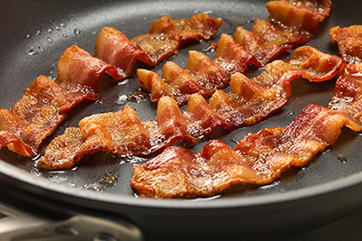
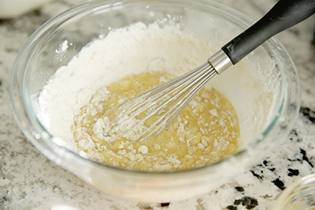
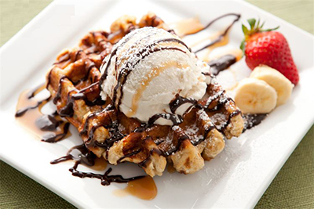

How To Make Bacon Flavored Waffles
Crisp The Bacon Slices
No one wants to wait for bacon, lets cook this on the stove. Heat an ungreased skillet on low and then place the raw bacon slices in the skillet. Line up bacon so that it cooks evenly.
Cook each side for five minutes but know the timing will vary with bacon thickness.
When done move bacon to a paper towl lined plate.
Dab some of the grease off, but leave a little to add flavor to the batter. Rip into small pieces and set aside.

Image: Bacon from http://mgoblog.com/mgoboard/bacon-85-sure-its-happening
Mix The Batter
For this you will need 2 cups all purpose flour, 1 teaspoon baking powder, ¾ teaspoon baking soda, ¼ teaspoon salt, 1 1/3 cup buttermilk, 4 tablespoons canola oil, 2 large eggs
Combine dry ingredients in a large mixing bowl and hand mix using a large spoon or rubber spatula. In a separate bowl, whisk buttermilk with 2 tablespoons of the canola oil and eggs. Fold the buttermilk mixture to the flour mixture and stir well using a large spoon or rubber spatula. Then gently fold the pieces of bacon into the mixture.

Image: Waffle Batter Being Mixed http://ourbestbites.com/2014/07/homemade-waffle-cones/
Cook Them Bad Boys
I was hoping you owned a waffle maker, if not these probably make some BOMB pancakes. Turn that bad boy on and grease with butter. Pour about ½ cup of the batter into the waffle iron. Cook for 6 to 8 minutes or until lightly browned.
Image: Waffle Maker from http://www.simplebites.net/how-to-make-your-own-waffle-mix/
Treat Yo Self
No bacon waffle is complete without toppings. We like cinnamon and honey drizzle, whipped cream and chocolate chips. But old fashioned maple syrup and extra bacon is just as good. Try warming the maple syrup and bacon in a small pan before pouring over waffle.

Image: Waffle Toppings from http://www.craffles.com/Menu.html
Eat!
I shouldnt have to tell you how to do this. But if you really need to know, take notes from Matilda. I think Bruce got it right.
Image: Bruce from http://imgur.com/gallery/FiTRM